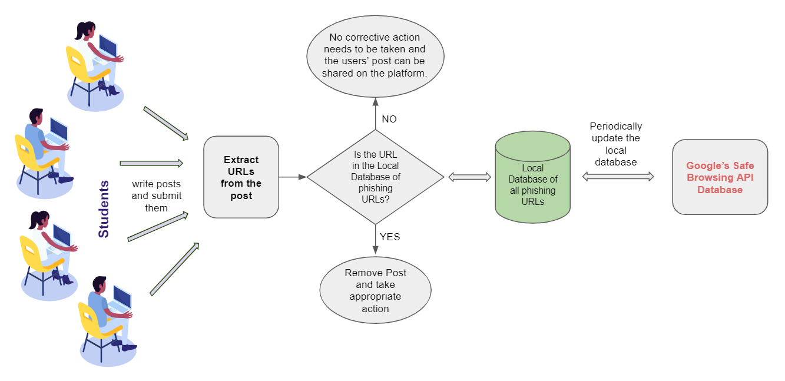

Proposed Solution for Catching Phishing
Written: November 2020

Phishing is a type of spam in which the message sender pretends to be a legitimate user in order to trick a user into handing over their personal information by asking them to complete some action such as verification of a password, verification or updation of sensitive information, etc. There is a need to prevent phishing in order to protect user privacy and prevent surveillance. We suggest a technique which avoids the use of third party tools. We suggest the use of Google’s Safe Browsing API which keeps a list of phishy urls. Our method is as follows:
- Extract URLs from the UGC.
- Maintain a local database containing phishy urls. The data is obtained from Google’s Safe Browsing API. The database will be periodically updated, so that new changes can be incorporated and the database remains up to date. An advantage of keeping a local database is that data is exchanged infrequently with the google server so the server never knows the actual URLs which are queried. Whereas if you use the live API, then the google server will know what urls you are checking.
- A tools will have to be created which checks each url extracted from the user posts against the local database of phishy urls. If the url is phishy, it will be removed and appropriate action will be taken against the user who posted it.